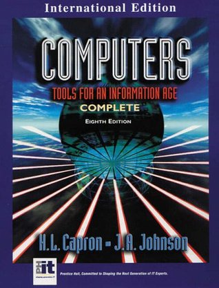

CS3, the into computersurvey class at Santa Monica College. is offered every semester. Several sections are available. Nevertheless, the popularity of the class has meant in the past that not all students wanting to take the class could be admitted.
The primary textbook for this course is Computers, Tools for an Information Age by H. L Capron.
click on the image to see a larger versionClick here for informational class web page
The class covers various areas of study: